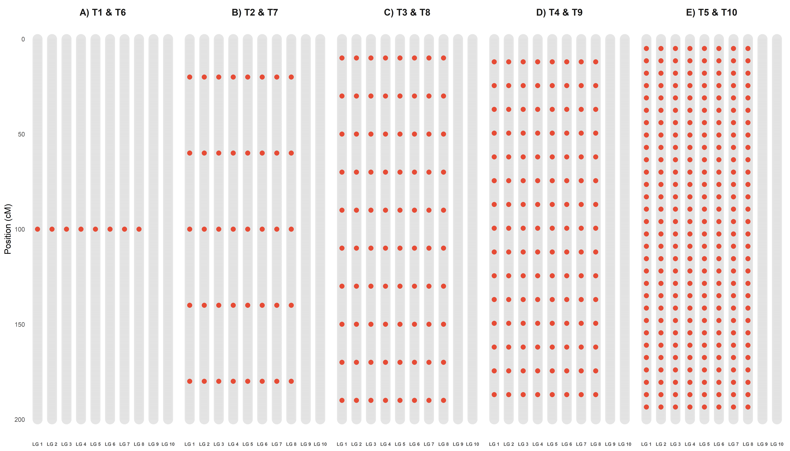

Mapa Genético
Costa, W. G.
2025-12-03
Last updated: 2025-12-03
Checks: 6 1
Knit directory:
Importance-of-markers-for-QTL-detection-by-machine-learning-methods/
This reproducible R Markdown analysis was created with workflowr (version 1.7.2). The Checks tab describes the reproducibility checks that were applied when the results were created. The Past versions tab lists the development history.
The R Markdown file has unstaged changes. To know which version of
the R Markdown file created these results, you’ll want to first commit
it to the Git repo. If you’re still working on the analysis, you can
ignore this warning. When you’re finished, you can run
wflow_publish to commit the R Markdown file and build the
HTML.
Great job! The global environment was empty. Objects defined in the global environment can affect the analysis in your R Markdown file in unknown ways. For reproduciblity it’s best to always run the code in an empty environment.
The command set.seed(20221222) was run prior to running
the code in the R Markdown file. Setting a seed ensures that any results
that rely on randomness, e.g. subsampling or permutations, are
reproducible.
Great job! Recording the operating system, R version, and package versions is critical for reproducibility.
Nice! There were no cached chunks for this analysis, so you can be confident that you successfully produced the results during this run.
Great job! Using relative paths to the files within your workflowr project makes it easier to run your code on other machines.
Great! You are using Git for version control. Tracking code development and connecting the code version to the results is critical for reproducibility.
The results in this page were generated with repository version bae0974. See the Past versions tab to see a history of the changes made to the R Markdown and HTML files.
Note that you need to be careful to ensure that all relevant files for
the analysis have been committed to Git prior to generating the results
(you can use wflow_publish or
wflow_git_commit). workflowr only checks the R Markdown
file, but you know if there are other scripts or data files that it
depends on. Below is the status of the Git repository when the results
were generated:
Ignored files:
Ignored: .Rproj.user/
Ignored: analysis/GWAS.Rmd
Ignored: analysis/figure/
Ignored: analysis/gwas-GLM.Rmd
Ignored: output/DP_heatmap.tiff
Ignored: output/F1_Score_heatmap.tiff
Ignored: output/FP_heatmap.tiff
Ignored: output/Figure1_Ideogram.tiff
Ignored: output/Precision_heatmap.tiff
Ignored: output/Runtime_Comparison.tiff
Ignored: output/Specificity_heatmap.tiff
Ignored: output/genetic_map.tiff
Ignored: output/mod.rda
Untracked files:
Untracked: output/Consolidated_Performance_Metrics.csv
Untracked: output/Figure1_Ideogram.png
Untracked: output/Hits_Errors_Detailed_Table.csv
Untracked: output/Runtime_Comparison.png
Untracked: output/Runtime_Summary_Table.csv
Untracked: output/Runtime_Summary_Table_mean.csv
Untracked: output/genetic_map.png
Untracked: output/gwas_cv/
Untracked: output/gwas_multimodel/
Untracked: output/ml_cv/
Unstaged changes:
Modified: analysis/consolidated_analysis.Rmd
Modified: analysis/map.Rmd
Modified: output/DP_heatmap.png
Modified: output/F1_Score_heatmap.png
Modified: output/FP_heatmap.png
Modified: output/Precision_heatmap.png
Modified: output/Specificity_heatmap.png
Note that any generated files, e.g. HTML, png, CSS, etc., are not included in this status report because it is ok for generated content to have uncommitted changes.
These are the previous versions of the repository in which changes were
made to the R Markdown (analysis/map.Rmd) and HTML
(docs/map.html) files. If you’ve configured a remote Git
repository (see ?wflow_git_remote), click on the hyperlinks
in the table below to view the files as they were in that past version.
| File | Version | Author | Date | Message |
|---|---|---|---|---|
| Rmd | aa0279a | WevertonGomesCosta | 2025-11-05 | update width figures |
| html | aa0279a | WevertonGomesCosta | 2025-11-05 | update width figures |
| Rmd | 558710b | WevertonGomesCosta | 2025-07-29 | update map .rmd an .html |
| html | 558710b | WevertonGomesCosta | 2025-07-29 | update map .rmd an .html |
| Rmd | f6193e2 | WevertonGomesCosta | 2025-07-28 | add map. rmd and .html |
| html | f6193e2 | WevertonGomesCosta | 2025-07-28 | add map. rmd and .html |
| Rmd | aa95c1d | WevertonGomesCosta | 2025-03-26 | add map.rmd |
| html | 9b9dd84 | WevertonGomesCosta | 2025-03-26 | add map.html |
| html | 1e8f0d3 | WevertonGomesCosta | 2025-03-25 | add map.html |
| Rmd | 450b544 | WevertonGomesCosta | 2025-03-25 | add files GWAS.Rmd, map.Rmd and snpsofinterest. Rdata |
Creating Genetic Map Chart 1
Este documento tem como objetivo criar um gráfico genético para as características do experimento. O gráfico será dividido em cinco partes, cada uma representando uma característica diferente.
library(tidyverse)
library(data.table)
library(metan)
library(ggthemes)
library(ggrepel)
library(ggpubr)
library(cowplot)
library(tidytext)Genetic map
Primeiro vamos definir nossos SNPs de interesse para as variáveis.
Essas informações foram pré-definidas e podem ser encontrados no arquivo
control_genetic. Vamos carregar o arquivo
snpsOfInterest.RData que contém as infomações dos snps
considerados QTLs por variavel.
Agora vamos definir os nomes das colunas para nosso
snpsOfInterest e criar um objeto locus com as
informações de ininício e témino de cada grupo de ligação.
locus <-
data.frame(
c(
1,
401,
402,
802,
803,
1203,
1204,
1604,
1605,
2005,
2006,
2406,
2407,
2807,
2808,
3208,
3209,
3609,
3610,
4010
)
)
colnames(locus) <- c("marker")Para facilitar a visualização criei um gráfico genético das
características map_plot. Para isso criei o
map com o número de marcadores e tamanho de cada grupo de
liagação.
map <-
data.frame(rbind(
cbind(seq(1, 401, 1), rep("LG 1", 401), seq(0, 200, 0.5)),
cbind(seq(402, 802, 1), rep("LG 2", 401), seq(0, 200, 0.5)),
cbind(seq(803, 1203, 1), rep("LG 3", 401), seq(0, 200, 0.5)),
cbind(seq(1204, 1604, 1), rep("LG 4", 401), seq(0, 200, 0.5)),
cbind(seq(1605, 2005, 1), rep("LG 5", 401), seq(0, 200, 0.5)),
cbind(seq(2006, 2406, 1), rep("LG 6", 401), seq(0, 200, 0.5)),
cbind(seq(2407, 2807, 1), rep("LG 7", 401), seq(0, 200, 0.5)),
cbind(seq(2808, 3208, 1), rep("LG 8", 401), seq(0, 200, 0.5)),
cbind(seq(3209, 3609, 1), rep("LG 9", 401), seq(0, 200, 0.5)),
cbind(seq(3610, 4010, 1), rep("LG 10", 401), seq(0, 200, 0.5))
))
colnames(map) <- c("marker", "LG", "Size")
map <- map %>%
mutate(
marker = as.numeric(marker),
Size = as.numeric(Size),
LG = factor(
LG,
levels = c(
"LG 1",
"LG 2",
"LG 3",
"LG 4",
"LG 5",
"LG 6",
"LG 7",
"LG 8",
"LG 9",
"LG 10"
)
)
)Para dividir a figura e mostrar todos os maps genômicos das
características, dividi o snpsOfInterest e o
map para cada característica e inclui os SNPs de interesse
no map para cada característica.
snpsOfInterest1 <- snpsOfInterest %>%
filter(variable == 1)
snpsOfInterest2 <- snpsOfInterest %>%
filter(variable == 2)
snpsOfInterest3 <- snpsOfInterest %>%
filter(variable == 3)
snpsOfInterest4 <- snpsOfInterest %>%
filter(variable == 4)
snpsOfInterest5 <- snpsOfInterest %>%
filter(variable == 5)
map1 <- map %>%
mutate(
is_highlight = ifelse(marker %in% snpsOfInterest1$marker, "yes", "no"),
is_locus = ifelse(marker %in% locus$marker, "yes", "no")
)
map2 <- map %>%
mutate(
is_highlight = ifelse(marker %in% snpsOfInterest2$marker, "yes", "no"),
is_locus = ifelse(marker %in% locus$marker, "yes", "no")
)
map3 <- map %>%
mutate(
is_highlight = ifelse(marker %in% snpsOfInterest3$marker, "yes", "no"),
is_locus = ifelse(marker %in% locus$marker, "yes", "no")
)
map4 <- map %>%
mutate(
is_highlight = ifelse(marker %in% snpsOfInterest4$marker, "yes", "no"),
is_locus = ifelse(marker %in% locus$marker, "yes", "no")
)
map5 <- map %>%
mutate(
is_highlight = ifelse(marker %in% snpsOfInterest5$marker, "yes", "no"),
is_locus = ifelse(marker %in% locus$marker, "yes", "no")
)Agora cirei o gráfico de cada característica e depois agrupei eles em
apenas uma imagem maps.
map_plot1 <- ggplot(map1, aes(x = LG, y = Size)) +
geom_segment(aes(
yend = 200,
y = 0,
x = LG,
xend = LG
),
color = "skyblue",
size = 1) +
geom_point(
data = subset(map1, is_locus == "yes"),
color = "skyblue",
size = 0.5
) +
geom_point(
data = subset(map1, is_highlight == "yes"),
color = "Orange",
size = 0.5
) +
geom_text_repel(
data = subset(map1, is_highlight == "yes"),
aes(label = marker),
size = 1.5,
max.overlaps = Inf,
min.segment.length = 0,
force = 0,
nudge_x = -0.55,
nudge_y = -1.5,
direction = "x",
hjust = 0.5,
segment.curvature = -1e-20,
segment.angle = 45,
segment.size = 0.1
) +
geom_text_repel(
data = subset(map1, is_locus == "yes"),
aes(label = marker),
size = 1.5,
max.overlaps = Inf,
min.segment.length = 0,
force = 0,
nudge_x = -0.55,
nudge_y = -1.5,
direction = "x",
hjust = 0.5,
segment.curvature = -1e-20,
segment.angle = 45,
segment.size = 0.1
) +
scale_x_discrete(expand = expansion(mult = c(0.15, 0.05))) +
scale_y_continuous(expand = expansion(mult = c(0.03, 0.05))) +
theme_void() +
theme(
axis.text.y = element_blank(),
axis.text.x = element_text(size = 4),
axis.ticks = element_blank()
) +
labs(y = "", x = "")
map_plot2 <- ggplot(map2, aes(x = LG, y = Size)) +
geom_segment(aes(
yend = 200,
y = 0,
x = LG,
xend = LG
),
color = "skyblue",
size = 1) +
geom_point(
data = subset(map2, is_locus == "yes"),
color = "skyblue",
size = 0.5
) +
geom_point(
data = subset(map2, is_highlight == "yes"),
color = "Orange",
size = 0.5
) +
geom_text_repel(
data = subset(map2, is_highlight == "yes"),
aes(label = marker),
size = 1.5,
max.overlaps = Inf,
min.segment.length = 0,
force = 0,
nudge_x = -0.55,
nudge_y = -1.5,
direction = "x",
hjust = 0.5,
segment.curvature = -1e-20,
segment.angle = 45,
segment.size = 0.1
) +
geom_text_repel(
data = subset(map2, is_locus == "yes"),
aes(label = marker),
size = 1.5,
max.overlaps = Inf,
min.segment.length = 0,
force = 0,
nudge_x = -0.55,
nudge_y = -1.5,
direction = "x",
hjust = 0.5,
segment.curvature = -1e-20,
segment.angle = 45,
segment.size = 0.1
) +
scale_x_discrete(expand = expansion(mult = c(0.15, 0.05))) +
scale_y_continuous(expand = expansion(mult = c(0.03, 0.05))) +
theme_void() +
theme(
axis.text.y = element_blank(),
axis.text.x = element_text(size = 4),
axis.ticks = element_blank()
) +
labs(y = "", x = "")
map_plot3 <- ggplot(map3, aes(x = LG, y = Size)) +
geom_segment(aes(
yend = 200,
y = 0,
x = LG,
xend = LG
),
color = "skyblue",
size = 1) +
geom_point(
data = subset(map3, is_locus == "yes"),
color = "skyblue",
size = 0.5
) +
geom_point(
data = subset(map3, is_highlight == "yes"),
color = "Orange",
size = 0.5
) +
geom_text_repel(
data = subset(map3, is_highlight == "yes"),
aes(label = marker),
size = 1.5,
max.overlaps = Inf,
min.segment.length = 0,
force = 0,
nudge_x = -0.55,
nudge_y = -1.5,
direction = "x",
hjust = 0.5,
segment.curvature = -1e-20,
segment.angle = 45,
segment.size = 0.1
) +
geom_text_repel(
data = subset(map3, is_locus == "yes"),
aes(label = marker),
size = 1.5,
max.overlaps = Inf,
min.segment.length = 0,
force = 0,
nudge_x = -0.55,
nudge_y = -1.5,
direction = "x",
hjust = 0.5,
segment.curvature = -1e-20,
segment.angle = 45,
segment.size = 0.1
) +
scale_x_discrete(expand = expansion(mult = c(0.15, 0.05))) +
scale_y_continuous(expand = expansion(mult = c(0.03, 0.05))) +
theme_void() +
theme(
axis.text.y = element_blank(),
axis.text.x = element_text(size = 4),
axis.ticks = element_blank()
) +
labs(y = "", x = "")
map_plot4 <- ggplot(map4, aes(x = LG, y = Size)) +
geom_segment(aes(
yend = 200,
y = 0,
x = LG,
xend = LG
),
color = "skyblue",
size = 1) +
geom_point(
data = subset(map4, is_locus == "yes"),
color = "skyblue",
size = 0.5
) +
geom_point(
data = subset(map4, is_highlight == "yes"),
color = "Orange",
size = 0.5
) +
geom_text_repel(
data = subset(map4, is_highlight == "yes"),
aes(label = marker),
size = 1.5,
max.overlaps = Inf,
min.segment.length = 0,
force = 0,
nudge_x = -0.55,
nudge_y = -1.5,
direction = "x",
hjust = 0.5,
segment.curvature = -1e-20,
segment.angle = 45,
segment.size = 0.1
) +
geom_text_repel(
data = subset(map4, is_locus == "yes"),
aes(label = marker),
size = 1.5,
max.overlaps = Inf,
min.segment.length = 0,
force = 0,
nudge_x = -0.55,
nudge_y = -1.5,
direction = "x",
hjust = 0.5,
segment.curvature = -1e-20,
segment.angle = 45,
segment.size = 0.1
) +
scale_x_discrete(expand = expansion(mult = c(0.15, 0.05))) +
scale_y_continuous(expand = expansion(mult = c(0.03, 0.05))) +
theme_void() +
theme(
axis.text.y = element_blank(),
axis.text.x = element_text(size = 4),
axis.ticks = element_blank()
) +
labs(y = "", x = "")
map_plot5 <- ggplot(map5, aes(x = LG, y = Size)) +
geom_segment(aes(
yend = 200,
y = 0,
x = LG,
xend = LG
),
color = "skyblue",
size = 1) +
geom_point(
data = subset(map5, is_locus == "yes"),
color = "skyblue",
size = 0.5
) +
geom_point(
data = subset(map5, is_highlight == "yes"),
color = "Orange",
size = 0.5
) +
geom_text_repel(
data = subset(map5, is_highlight == "yes"),
aes(label = marker),
size = 1.5,
max.overlaps = Inf,
min.segment.length = 0,
force = 0,
nudge_x = -0.55,
nudge_y = -1.5,
direction = "x",
hjust = 0.5,
segment.curvature = -1e-20,
segment.angle = 45,
segment.size = 0.1
) +
geom_text_repel(
data = subset(map5, is_locus == "yes"),
aes(label = marker),
size = 1.5,
max.overlaps = Inf,
min.segment.length = 0,
force = 0,
nudge_x = -0.55,
nudge_y = -1.5,
direction = "x",
hjust = 0.5,
segment.curvature = -1e-20,
segment.angle = 45,
segment.size = 0.1
) +
scale_x_discrete(expand = expansion(mult = c(0.15, 0.05))) +
scale_y_continuous(expand = expansion(mult = c(0.03, 0.05))) +
theme_void() +
theme(
axis.text.y = element_blank(),
axis.text.x = element_text(size = 4),
axis.ticks = element_blank()
) +
labs(y = "", x = "")
maps <- ggdraw() +
draw_plot(
map_plot1,
x = 0.05,
y = .5,
width = .3,
height = .5
) +
draw_plot(
map_plot2,
x = .4,
y = .5,
width = .3,
height = .5
) +
draw_plot(
map_plot3,
x = .75,
y = .5,
width = .3,
height = .5
) +
draw_plot(
map_plot4,
x = 0.25,
y = 0,
width = 0.3,
height = 0.5
) +
draw_plot(
map_plot5,
x = 0.65,
y = 0,
width = 0.3,
height = 0.5
) +
draw_plot_label(
label = c("A", "B", "C", "D", "E"),
size = 15,
x = c(0, 0.35, 0.7, 0.2, 0.6),
y = c(1, 1, 1, 0.5, 0.5)
)
print(maps)
| Version | Author | Date |
|---|---|---|
| b951fd1 | WevertonGomesCosta | 2025-07-29 |
Creating Genetic Map Chart 2
Este documento tem como objetivo criar um gráfico genético (Ideograma) para as características do experimento, atendendo às solicitações de visualização de densidade e distribuição dos QTLs.
library(tidyverse)
library(data.table)
library(metan)
library(ggthemes)
library(ggrepel)
library(ggpubr)
library(cowplot)Genetic map preparation
Primeiro, carregamos os SNPs de interesse.
# Certifique-se de que o arquivo existe neste caminho
if(file.exists("data/snpsOfInterest.RData")){
load("data/snpsOfInterest.RData")
} else {
# Dados simulados apenas para o exemplo rodar caso o arquivo não exista
# (Remova este bloco else quando for rodar com seus dados reais)
snpsOfInterest <- data.frame(
variable = rep(1:5, each=5),
marker = sample(1:4010, 25)
)
}Vamos criar o mapa base (Backbone) de forma mais eficiente, gerando os 10 grupos de ligação e os 4010 marcadores automaticamente.
# Criação automática do mapa com 10 LGs, 401 marcadores cada
map_list <- lapply(1:10, function(i) {
start_marker <- (i - 1) * 401 + 1
end_marker <- i * 401
data.frame(
marker = seq(start_marker, end_marker),
LG = factor(paste0("LG ", i), levels = paste0("LG ", 1:10)), # Garante ordem correta
Size = seq(0, 200, length.out = 401)
)
})
map_base <- do.call(rbind, map_list)Agora, vamos processar os dados para plotagem. Em vez de criar 5
plots separados, vamos criar um único dataframe consolidado com
uma coluna chamada Scenario. Isso permite usar o
facet_wrap do ggplot2, garantindo alinhamento perfeito.
# Definir os labels dos cenários (Baseado na descrição do seu artigo)
scenario_labels <- c(
"1" = "A) T1 & T6",
"2" = "B) T2 & T7",
"3" = "C) T3 & T8",
"4" = "D) T4 & T9",
"5" = "E) T5 & T10"
)
# Preparar dados dos QTLs (SNPs de interesse)
# Vamos expandir para ter um mapa para cada cenário
plot_data <- list()
for (var_code in 1:5) {
# Filtra SNPs deste cenário
current_snps <- snpsOfInterest %>% filter(variable == var_code)
# Cria uma cópia do mapa base e marca os QTLs
temp_map <- map_base %>%
mutate(
Scenario = scenario_labels[as.character(var_code)],
Type = case_when(
marker %in% current_snps$marker ~ "QTL",
TRUE ~ "Marker"
),
Label = ifelse(Type == "QTL", as.character(marker), NA)
)
plot_data[[var_code]] <- temp_map
}
final_df <- do.call(rbind, plot_data)
# Calcular tamanho máximo de cada cromossomo para desenhar o corpo arredondado
chrom_sizes <- map_base %>%
group_by(LG) %>%
summarise(max_size = max(Size))Plotting the Ideogram
Agora geramos o gráfico unificado. Usamos:
geom_segmentgrosso e cinza claro para fazer o corpo do cromossomo.geom_segmentfino e cinza escuro para mostrar a densidade de todos os marcadores.geom_pointcolorido para os QTLs.
ideogram <- ggplot() +
# 1. Corpo do Cromossomo (Barra arredondada)
geom_segment(data = chrom_sizes,
aes(x = LG, xend = LG, y = 0, yend = max_size),
lineend = "round", color = "gray90", size = 6) +
# 2. Densidade de Marcadores (Mostra distribuição - Pedido do Revisor)
# Usamos o map_base para desenhar a densidade em todos os painéis
geom_segment(data = final_df %>% filter(Type == "Marker"),
aes(x = as.numeric(LG) - 0.25, xend = as.numeric(LG) + 0.25,
y = Size, yend = Size),
color = "gray70", size = 0.1, alpha = 0.5) +
# 3. QTLs (Pontos de destaque)
geom_point(data = final_df %>% filter(Type == "QTL"),
aes(x = LG, y = Size),
color = "#E64B35", size = 2.5) + # Cor Vermelho Sci-Fi (Lancet/Nature style)
# 4. Labels dos QTLs (opcional, use ggrepel se quiser nomes)
# geom_text_repel(data = final_df %>% filter(Type == "QTL"),
# aes(x = LG, y = Size, label = marker),
# nudge_x = 0.4, direction = "y", size = 2, segment.size = 0.2) +
# 5. Facetamento por Cenário
facet_wrap(~Scenario, ncol = 5) +
# 6. Estética
scale_y_reverse(breaks = seq(0, 200, 50), name = "Position (cM)") + # Inverte Y para o 0 ficar no topo
theme_minimal() +
theme(
panel.grid = element_blank(), # Remove grades de fundo
axis.title.x = element_blank(), # Remove título X (LG)
axis.text.x = element_text(face = "bold", size = 6),
axis.text.y = element_text(size = 8),
strip.text = element_text(face = "bold", size = 12), # Títulos dos Cenários
plot.background = element_rect(fill = "white", color = NA),
legend.position = "none"
)
print(ideogram)
R version 4.5.1 (2025-06-13 ucrt)
Platform: x86_64-w64-mingw32/x64
Running under: Windows 11 x64 (build 26200)
Matrix products: default
LAPACK version 3.12.1
locale:
[1] LC_COLLATE=Portuguese_Brazil.utf8 LC_CTYPE=Portuguese_Brazil.utf8
[3] LC_MONETARY=Portuguese_Brazil.utf8 LC_NUMERIC=C
[5] LC_TIME=Portuguese_Brazil.utf8
time zone: America/Sao_Paulo
tzcode source: internal
attached base packages:
[1] stats graphics grDevices utils datasets methods base
other attached packages:
[1] tidytext_0.4.3 cowplot_1.2.0 ggpubr_0.6.2 ggrepel_0.9.6
[5] ggthemes_5.1.0 metan_1.19.0 data.table_1.17.8 lubridate_1.9.4
[9] forcats_1.0.1 stringr_1.6.0 dplyr_1.1.4 purrr_1.2.0
[13] readr_2.1.6 tidyr_1.3.1 tibble_3.3.0 ggplot2_4.0.1
[17] tidyverse_2.0.0
loaded via a namespace (and not attached):
[1] tidyselect_1.2.1 farver_2.1.2 S7_0.2.1
[4] fastmap_1.2.0 GGally_2.4.0 janeaustenr_1.0.0
[7] tweenr_2.0.3 mathjaxr_1.8-0 promises_1.5.0
[10] digest_0.6.39 timechange_0.3.0 lifecycle_1.0.4
[13] tokenizers_0.3.0 magrittr_2.0.4 compiler_4.5.1
[16] rlang_1.1.6 sass_0.4.10 tools_4.5.1
[19] yaml_2.3.10 knitr_1.50 ggsignif_0.6.4
[22] labeling_0.4.3 RColorBrewer_1.1-3 abind_1.4-8
[25] workflowr_1.7.2 withr_3.0.2 numDeriv_2016.8-1.1
[28] grid_4.5.1 polyclip_1.10-7 git2r_0.36.2
[31] scales_1.4.0 MASS_7.3-65 cli_3.6.5
[34] rmarkdown_2.30 ragg_1.5.0 reformulas_0.4.2
[37] generics_0.1.4 otel_0.2.0 rstudioapi_0.17.1
[40] tzdb_0.5.0 minqa_1.2.8 cachem_1.1.0
[43] ggforce_0.5.0 splines_4.5.1 vctrs_0.6.5
[46] boot_1.3-32 Matrix_1.7-4 jsonlite_2.0.0
[49] carData_3.0-5 car_3.1-3 hms_1.1.4
[52] patchwork_1.3.2 rstatix_0.7.3 Formula_1.2-5
[55] systemfonts_1.3.1 jquerylib_0.1.4 glue_1.8.0
[58] nloptr_2.2.1 ggstats_0.11.0 stringi_1.8.7
[61] gtable_0.3.6 later_1.4.4 lme4_1.1-37
[64] lmerTest_3.1-3 pillar_1.11.1 htmltools_0.5.8.1
[67] R6_2.6.1 textshaping_1.0.4 Rdpack_2.6.4
[70] rprojroot_2.1.1 evaluate_1.0.5 lattice_0.22-7
[73] SnowballC_0.7.1 rbibutils_2.4 backports_1.5.0
[76] broom_1.0.10 httpuv_1.6.16 bslib_0.9.0
[79] Rcpp_1.1.0 nlme_3.1-168 whisker_0.4.1
[82] xfun_0.54 fs_1.6.6 pkgconfig_2.0.3